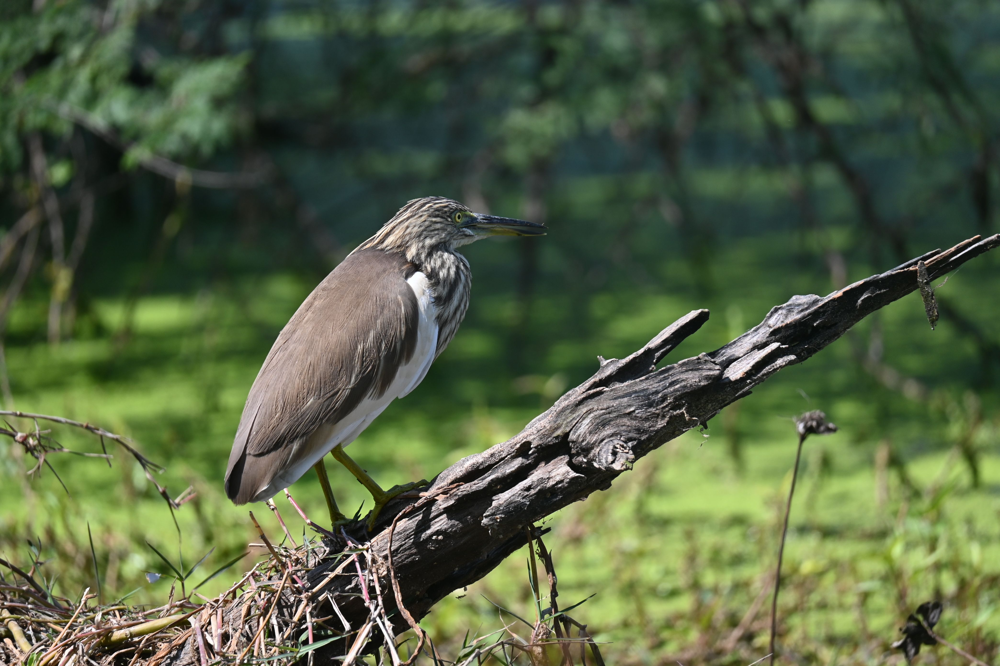
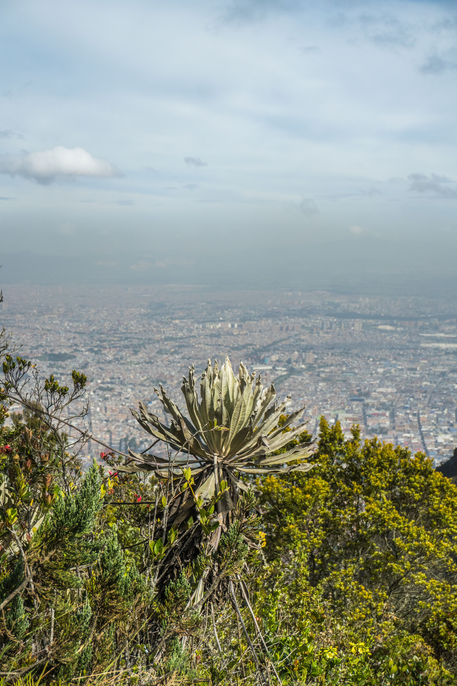

💧 Agua y biodiversidadEntre Ríos
Una travesía entre canales, aves y relatos de restauración alrededor de los humedales de Suba.
$75.000 COP por persona
Tarifa grupal (15 o más personas): $70.000 COP por persona
Tres rutas guiadas en bicicleta. Elige una para ver sus paradas, lo que incluye y qué llevar.

💧 Agua y biodiversidadUna travesía entre canales, aves y relatos de restauración alrededor de los humedales de Suba.
$75.000 COP por persona
Tarifa grupal (15 o más personas): $70.000 COP por persona
 🔥 Memoria ancestral
🔥 Memoria ancestral
Una experiencia de interpretación cultural junto a memorias muiscas, caminos rurales y saberes de la sabana.
$95.000 COP por persona
Tarifa grupal (15 o más personas): $90.000 COP por persona

⛰️ Bosque y miradorUn recorrido suave en bicicleta hacia el cerro para mirar la sabana desde lo alto, caminar entre bosque nativo y conversar sobre cómo se cuida este territorio.
$75.000 COP por persona
Tarifa grupal (15 o más personas): $70.000 COP por persona
Cada salida es de hasta 20 personas y se confirma al completar 7. Si no se completa, te proponemos otra fecha.